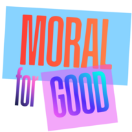
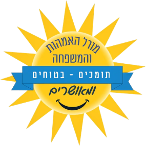

מתנגן עכשיו
מתנגן עכשיו
מורל האימהות והמשפחה
בהנחיית · נכריז בקרוב
ערוץ LIVE מהאולפן, עשרות ערוצי תוכן ורשת שלמה של פרויקטים חברתיים תחת גג אחד — משדרים 24 שעות ביממה.
כל הפרויקטים והאפליקציות של Moral, במקום אחד.

עשייה חברתית וקהילתית
←
הבית של כל פרויקטי Moral
←הפקות ואירועי בידור
←
קהילת אמהות ומשפחה
←האפליקציה בדרך
בקרובשגרירות ערכית ורוחנית
←חדשות טובות בלבד
בקרובהפקות אירועים אקסקלוסיביות
בקרובהפקות אירועים בין־לאומיות
בקרובלחיצה על תחנה מחברת אתכם לשידור.
המגישים הם הלב של הערוצים. הכירו אותם כאן.
מתנגן עכשיו
בהנחיית · נכריז בקרוב
 מתנגן עכשיו
מתנגן עכשיו
בהנחיית · נכריז בקרוב
 מתנגן עכשיו
מתנגן עכשיו
בהנחיית · נכריז בקרוב
 מתנגן עכשיו
מתנגן עכשיו
בהנחיית · נכריז בקרוב
מצלמות חיות מהאולפן ומהשטח. שידורי הווידאו כבר פועלים באפליקציה ובקרוב יגיעו גם לכאן.
להורדת האפליקציהשידורים חיים, ספריית הווידאו (VOD) וכל עולמות התוכן של הרשת.

הצצה לאולפן: מהרעיון הראשון ועד הרגע שהערוץ עולה לאוויר.


הורידו את האפליקציה או האזינו ישר מהדפדפן, על כל מסך.
לעמוד האפליקציה ›קמפיינים בשידור החי, בערוצי הווידאו ובאפליקציה. ספרו לנו על העסק ונחזור אליכם עם הצעה.